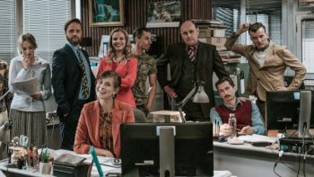

Poznaj the office
Strona poświęcona jest kultowemu już serialowi "The Office", który skradł serce milionów ludzi na całym świecie. Zawdzęcza to swojemu nietuzinkowemu humorowi, który wyznaje zasadę, że śmiać się można ze wszystkiego, wspaniałym bohaterom, z którymi łatwo można się związać oraz swojej formie.

Galeria
Kilka kluczowych postaci

Michael Scott

Dwight K. Schrute

Jim Halpert

Pam Beesly
Dunder Mifflin Paper Company Scranton